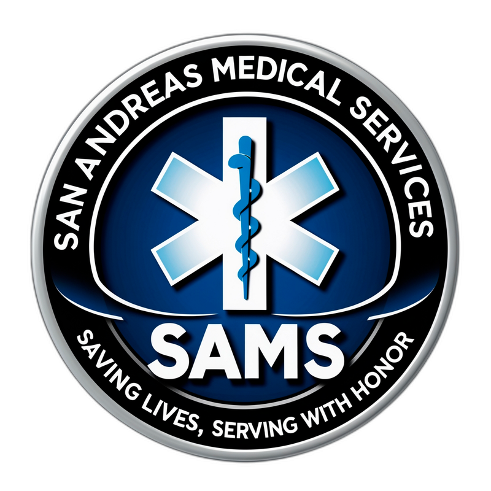
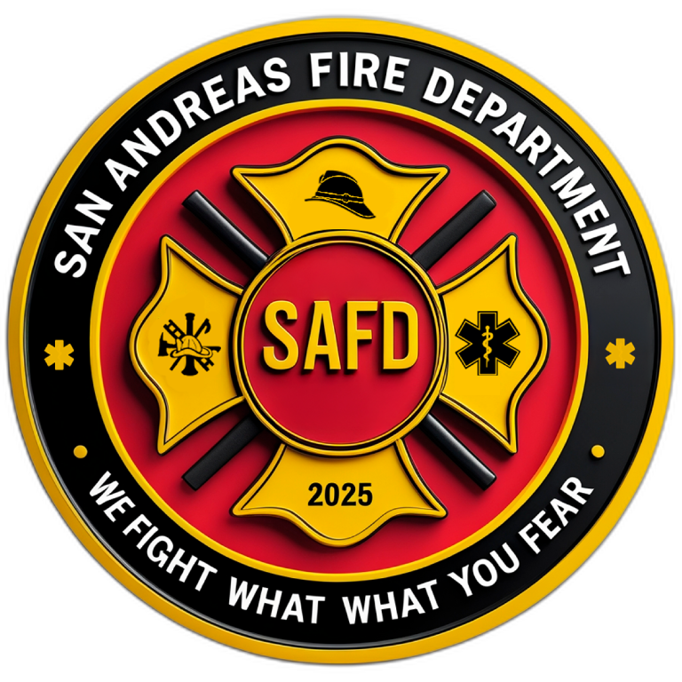

El SAED administra de punta a punta los servicios de emergencia del estado: reclutamiento, personal, turnos de guardia, inventario de insumos médicos y fichas de atención, coordinando a San Andreas Medical Services (SAMS) y San Andreas Fire Department (SAFD) bajo un mismo sistema.
El SAED gestiona la incorporación de personal para los dos servicios de emergencia del estado.

San Andreas Medical Services
Atención médica de emergencia, primeros auxilios y traslados de pacientes a los centros de salud del estado.
Postularme a SAMS
San Andreas Fire Department
Extinción de incendios, rescate en accidentes y respuesta ante emergencias que ponen en riesgo a la comunidad.
Postularme a SAFDDetrás de cada postulación hay una plataforma completa que administra al personal, sus guardias, el stock de insumos y cada atención brindada a la comunidad.
Postulaciones a SAMS y SAFD con seguimiento de estado, notas internas y notificación automática por Discord.
Roster por rango y por rol/división (RTD, RRHH, Dirección, Estudiantes...), tarifas por hora y liquidación de nómina.
Cada integrante ficha su propia entrada y salida, y RRHH/Dirección controla los registros de todo el departamento.
Stock de medicamentos e insumos con umbrales de reposición y registro de cada entrada y salida.
Historial de pacientes atendidos por SAMS e informes de intervención de SAFD, con responsable y estado.
Integración con Discord para avisar al instante sobre nuevas postulaciones y pagos de nómina.
Antes de enviar tu postulación a cualquiera de los departamentos, asegurate de cumplir con lo siguiente.
Elegí el departamento y completá el formulario. Toda la información será revisada por el equipo de reclutamiento del SAED.